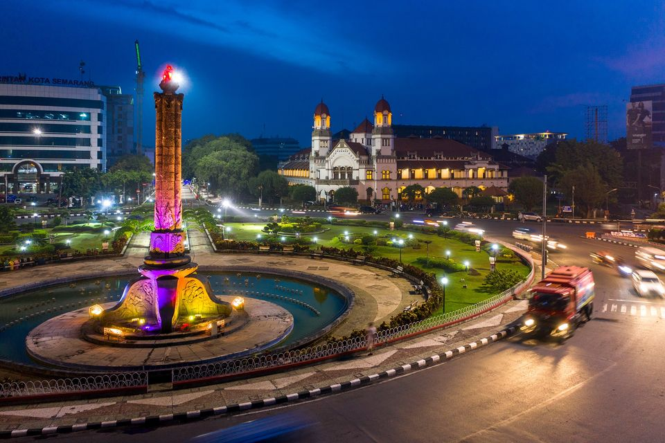
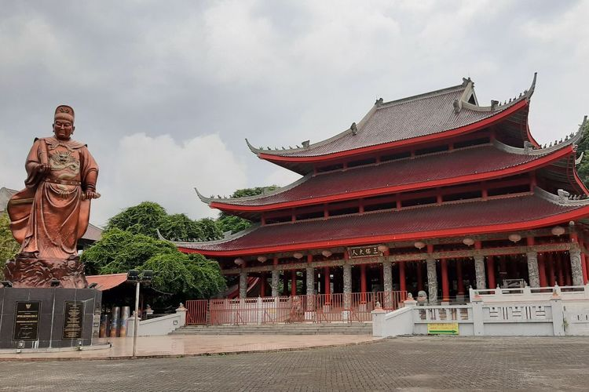

Sejarah

Sejarah Kota Semarang Jawa Tengah berawal kurang lebih pada Abad ke-8 M, yaitu daerah
pesisir yang bernama Pragota (sekarang menjadi Bergota) dan merupakan bagian dari
kerajaan Mataram Kuno. Daerah tersebut pada masa itu merupakan pelabuhan dan di depannya
terdapat gugusan pulau-pulau kecil. Akibat pengendapan, yang hingga sekarang masih terus
berlangsung, gugusan tersebut sekarang menyatu membentuk daratan. Bagian kota Semarang
Bawah yang dikenal sekarang ini dengan demikian dahulu merupakan laut. Pelabuhan tersebut
diperkirakan berada di daerah Pasar Bulu sekarang dan memanjang masuk ke Pelabuhan Simongan,
tempat armada Laksamana Cheng Ho bersandar pada tahun 1405 M. Di tempat pendaratannya,
Laksamana Cheng Ho mendirikan kelenteng dan mesjid yang sampai sekarang masih dikunjungi
dan disebut Kelenteng Sam Po Kong (Gedung Batu).
Pada akhir abad ke-15 M ada seseorang ditempatkan oleh Kerajaan Demak, dikenal sebagai
Pangeran Made Pandan, untuk menyebarkan agama Islam dari perbukitan Pragota. Dari waktu
ke waktu daerah itu semakin subur, dari sela-sela kesuburan itu muncullah pohon asam yang
arang (bahasa Jawa: Asem Arang), sehingga memberikan gelar atau nama daerah itu menjadi
Semarang.
Geografis

Kota Semarang terletak antara garis 6° 50' - 7° 10' Lintang Selatan dan garis 109° 35’ - 110°
50' Bujur Timur. Dibatasi sebelah Barat berbatasan dengan Kabupaten Kendal, sebelah Timur
berbatasan dengan kabupaten Demak, sebelah Selatan berbatasan dengan kabupaten Semarang dan
sebelah Utara dibatasi oleh Laut Jawa dengan panjang garis pantai meliputi 13,6 Km.
Ketinggian Kota Semarang terletak antara 0,75 sampai dengan 348,00 di atas garis pantai.
Secara administratif, Kota Semarang terbagi atas 16 wilayah Kecamatan dan 177 Kelurahan.
Luas wilayah Kota Semarang tercatat 373,70 Km2. Luas yang ada, terdiri dari 39,56 Km2
(10,59%) tanah sawah dan 334,14 (89,41%) bukan lahan sawah. Menurut penggunaannya, luas
tanah sawah terbesar merupakan tanah sawah tadah hujan (53,12%), dan hanya sekitar 19,97%
yang dapat ditanami 2 (dua) kali. Lahan kering sebagian besar digunakan untuk tanah
pekarangan/tanah untuk bangunan dan halaman sekitar, yaitu sebesar 42,17% dari total lahan
bukan sawah.
Wisata
Wisata merupakan suatu kegiatan perjalanan baik individu maupun grup dari tempat tinggal
menuju suatu tempat tertentu untuk mendapatkan pengalaman diluar aktivitas kesehariannya
(seperti: bekerja, sekolah, mengurus rumah tangga dll) dalam waktu yang sementara.
Kota Lama Semarang

Kota Lama Semarang adalah suatu kawasan di Semarang yang menjadi pusat perdagangan pada
abad 19-20 . Pada masa itu, untuk mengamankan warga dan wilayahnya, kawasan itu dibangun
benteng, yang dinamai benteng Vijfhoek. Untuk mempercepat jalur perhubungan antar ketiga
pintu gerbang dibenteng itu maka dibuat jalan-jalan perhubungan, dengan jalan utamanya
dinamai Heerenstraat. Saat ini bernama Jl. Letjen Soeprapto. Salah satu lokasi pintu
benteng yang ada sampai saat ini adalah Jembatan Berok, yang disebut De Zuider Por.
Kata 'Berok' sendiri merupakan hasil pelafalan masyarakat Pribumi yang kesulitan
melafalkan kata 'Burg' dalam Bahasa Belanda.
Observatorium Bosscha

Sam Poo Kong (Hanzi: 三保洞, memiliki makna "gua Sam Poo") yaitu bekas tempat persinggahan
dan pendaratan pertama seorang Laksamana Tiongkok beragama Islam yang bernama Zheng
He/Cheng Ho, yang juga dikenal dengan nama Sam Poo (三保). Tidak semua anak buah kapal
beragama Islam. Kompleks Sam Poo Kong berada di daerah Simongan, sebelah barat daya Kota
Semarang. Tanda yang menunjukan sebagai bekas petilasan yang berciri keislaman dengan
ditemukannya tulisan berbunyi "Marilah kita mengheningkan cipta dengan mendengarkan bacaan
Al Qur'an.